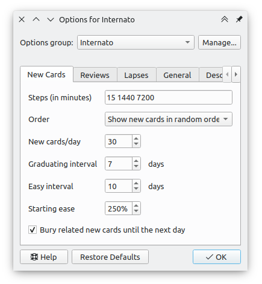
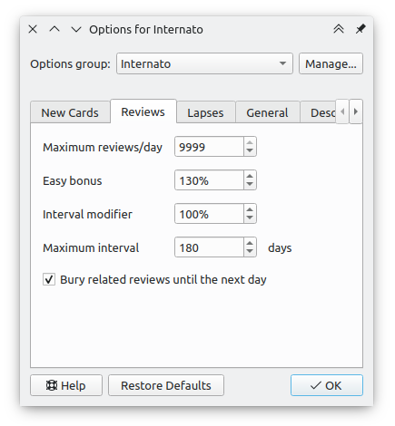
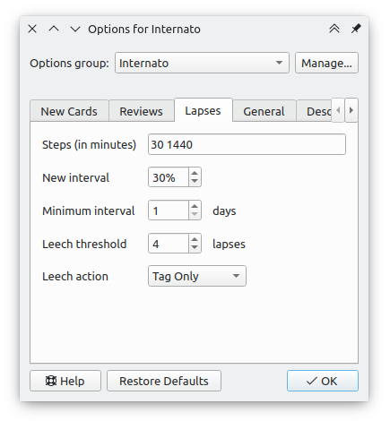
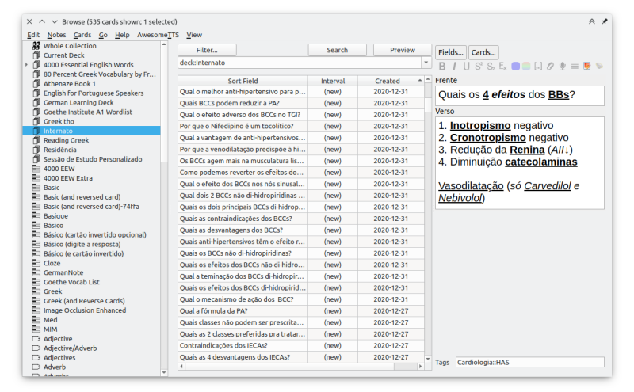

Como de costume: essa pagina provavelmente vai ficar extensa então aqui em baixo vou deixar um sumário para que você possa acessar rapidamente o tópico que te interessa.
- Como funciona o Anki
- Como fazer bons flashcards
- Cartas básicas vs cloze
- Minhas configurações
- Minhas extensões e complementos
Como funciona o Anki
https://www.youtube.com/watch?v=1XaJjbCSXT0&t=1050s
Esse vídeo acima é muito bom pra explicar rapidamente como funciona o algoritmo do Anki. Ele também ensina como configurar.
Como fazer bons flashcards
https://www.supermemo.com/en/articles/20rules
Para começar, eu preciso compartilhar esse texto do supermemo acima. São 20 regras fundamentais de como fazer bons flashcards de modo que sejam efetivos em fazer o recall.
Cartas básicas vs cloze
Sinceramente, eu prefiro muito mais as cartas básicas. Se vocês forem em fóruns de usuários do Anki (como no Reddit) ou se forem ler textos de blogs com dicas sobre Anki; vocês verão que as cartas cloze são muito recomendadas. Mas eu pessoalmente discordo um pouco dessa recomendação.
A vantagem é que elas são rápidas de fazer. Você pode copiar uma frase de um livro ou de um site e apenas ocultar uma palavra para depois ter de adivinhar. Mas eu acredito que esse é justamente o problema.
Eu acredito que o próprio processo de criar os flashcards já é um aprendizado. No início eu usava muitas cartas cloze e saia copiando toneladas de informações e ocultando trechos para criar várias cartas. Com o tempo eu fui percebendo que essa abordagem era inviável.
Focando em fazer mais cartas básicas eu me obrigo a pensar um pouco na melhor forma de perguntar sobre uma informação ou sobre um conceito e na melhor forma de responder. A criação de cartas básicas é um processo muito mais ativo (apesar de também ser mais trabalhoso).
Mesmo focando em usar mais cartas básicas, eu continuo usando as clozes para informações ordenadas. Quando eu preciso decorar uma listagem como, por exemplo, sinais de gravidade de uma doença ou um escore de risco, eu prefiro usar as clozes. Para conceitos mais gerais ou fatos pontuais (que são a maioria das minhas cartas), eu prefiro usar as cartas básicas.
Abaixo vocês vão ver um exemplo de carta cloze que eu fiz:

Minhas configurações
Abaixo vocês vão ver as minhas configurações para as cartas novas. Ainda não tenho certeza se vou manter as steps em 15 1440 7200 ou se altero. Também ainda estou em dúvida se mantenho o graduation interval para 7 dias ou se aumento. De qualquer forma, se eu fizer alguma mudança, venho atualizar aqui

Agora as configurações para as cartas em revisão. Normalmente todo mundo recomenda deixar o limite de revisões no máximo por dia, que é de 9999. Fazendo isso você deixa o algoritmo do Anki trabalhar livremente sem nenhum impedimento ou necessidade de flexibilizar os intervalos das cartas, ou seja, cada carta será mostrada exatamente nos seus devidos intervalos.

E por último, as minhas configurações de erros. O novo intervalo padrão para um erro no Anki é de 0% mas eu sinceramente acho isso radical demais. Prefiro deixar algo entre 20% e 50%.

Minhas extensões e complementos
Vou compartilhar com vocês os complementos que estou usando e considero muito úteis. Não gosto muito de instalar muitas extensões no Anki mas acredito que estas a seguir realmente auxiliam bastante e são muito práticas.
- Hierarchycal Tags: essa pra mim é a extensão mais importante; deveria ser oficialmente implementado no Anki (https://ankiweb.net/shared/info/594329229).
- Advanced browser (https://ankiweb.net/shared/info/874215009).
- Frozen fields (https://ankiweb.net/shared/info/516643804).
- Browser: Table/Editor side-by-side (https://ankiweb.net/shared/info/831846358)
Dessas extensões, eu realmente gosto muito da visualização vertical das notas no painel. Uso muito o painel a visualização horizontal era simplesmente horrivel, principalmente quando a carta tinha imagens.
